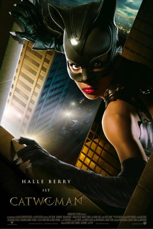

#6259 Catwoman
 
 IMDB-Wertung: 3.3 / 10
IMDB-Wertung: 3.3 / 10  Tomatometer: 9
Tomatometer: 9  Metascore: 0
Metascore: 0 
Patience Philips, eine schüchterne Designerin, arbeitet für den Kosmetikkonzern Hedare Beauty. Dieser steht kurz davor, ein revolutionäres Anti-Aging-Produkt auf den Markt zu bringen. Als Patience zufällig von dunklen Machenschaften erfährt, die in der Firma vorgehen, bringt man sie um. Wie durch ein Wunder wird Patience aber durch eine Katze namens Midnight zurück ins Leben geholt und mit 'Katzenfähigkeiten' ausgestattet. Schnell lernt sie mit ihren neu erworbenen Errungenschaften umzugehen und begibt sich auf die Jagd nach den 'Mördern' ihres alten Ichs...
Jahr: 2004
Dauer: 104 Minuten
FSK: 12
Land: USA Studio: Warner Home VideoTonspuren: DD5.1 - ,
Untertitel:
Auflösung: 1080p (1920x800) Größe: 7004 MB
Genre: Action, Thriller, Fantasy, Krimi
Regisseur: Pitof
Drehbuch: Brian Baugh
Soundtrack:
Darsteller:
 Halle Berry als Patience Phillips / Catwoman
Halle Berry als Patience Phillips / Catwoman Benjamin Bratt als Tom Lone
Benjamin Bratt als Tom Lone Sharon Stone als Laurel Hedare
Sharon Stone als Laurel Hedare Lambert Wilson als George Hedare
Lambert Wilson als George Hedare Frances Conroy als Ophelia
Frances Conroy als Ophelia Alex Borstein als Sally
Alex Borstein als Sally Michael Massee als Armando
Michael Massee als Armando Byron Mann als Wesley
Byron Mann als Wesley- Kim Smith als Drina
 Christopher Heyerdahl als Rocker
Christopher Heyerdahl als Rocker- Peter Wingfield als Dr. Ivan Slavicky
- Ona Grauer als Sandy
 Michael Daingerfield als Forensics Cop
Michael Daingerfield als Forensics Cop Benita Ha als Forensics Technician
Benita Ha als Forensics Technician- James Lloyd Reynolds als Hottie Doctor
 Ryan Robbins als Bartender
Ryan Robbins als Bartender John Cassini als Graphologist
John Cassini als Graphologist Diego Diablo Del Mar als Barker
Diego Diablo Del Mar als Barker Michael P. Northey als Jail Guard
Michael P. Northey als Jail Guard Aaron Douglas als Detective #1
Aaron Douglas als Detective #1- Peter Williams als Detective #2
- Janet Varney als Party Girl
 John Mann als Bouncer
John Mann als Bouncer- Brooke Theiss als Ferris Wheel Mom
 Michasha Armstrong als Ferris Wheel Operator
Michasha Armstrong als Ferris Wheel Operator- James Ashcroft als Janitor
- Herbert Duncanson als Security Guard
 Larry Sullivan als Warehouse Supervisor
Larry Sullivan als Warehouse Supervisor- Brett Chan als Thief 2 , uncredited
 Anne Fletcher als Woman at Carnival , uncredited
Anne Fletcher als Woman at Carnival , uncredited- Aaron Miko als Basketball Player , uncredited
- Stephanie Moseley als Nightclub Dancer , uncredited
- Missy Peregrym als Beau-line Graphics Model , uncredited
 Kimani Ray Smith als Thief 1 , uncredited
Kimani Ray Smith als Thief 1 , uncredited- Shaina Tianne Unger als Dancer / Special Skills , uncredited
- Berend McKenzie als Lance
- Chase Nelson-Murray als Kid #1
- Manny Petruzzelli als Kid #2
- Harley Reiner als Kid #3
- Landy Cannon als Randy
- Judith Maxie als Jeweler
- Jill Krop als Newscaster
- Dagmar Midcap als Television Reporter
- Patricia Mayen-Salazar als Housekeeper
- Connor Dunn als Little Boy
- Ashlea Earl als Performance Dancer
- Lori Fung als Performance Dancer
- Ursula Haczkiewicz als Performance Dancer
- Alisoun Payne als Performance Dancer
- Laurence Racine als Performance Dancer
Datei: X:\Comic-Filme\Catwoman (2004, FSK12, 1920x800).mkv seit 23.05.2017
Festplatte: Comicverfilmungen+MusikCD
 Es gibt insgesamt 44 Filme in der Gruppe 'Comic-Filme'
Es gibt insgesamt 44 Filme in der Gruppe 'Comic-Filme'